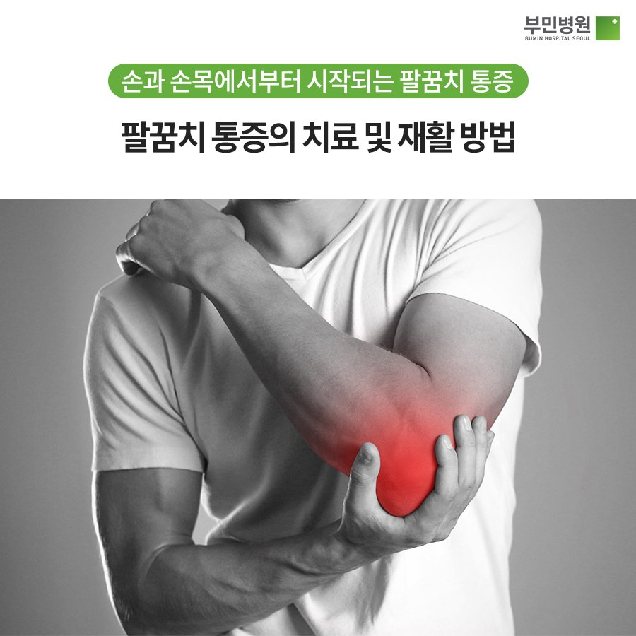

의학 관련 용어

- 내측상과염
- 팔꿈치 안쪽 뼈와 근육에 붙은 힘줄이 손상되어 통증이 발생하는 증상
걸레를 짜거나 무거운 요리기구를 들고 옮길 때, 컴퓨터를 많이 사용할 때처럼 손목을 구부리는 동작 등을 강도 높여 반복할 경우 충격이 쌓이면서 내측상과염이 나타납니다.
- 외측상과염
- 팔꿈치 바깥쪽에 시린 듯한 통증이 오는 것
외측상과염은 손과 손목을 펴는 근육이 팔꿈치 바깥쪽과 연결되어 있기 때문에 손과 손목을 펼 때 통증이 나타납니다. 그래서 손목 관절을 뒤로 구부리면 통증이 심해져요. 주로 무거운 물건을 계속 들어야 하는 배송업 종사자에게서 많이 나타납니다.
- 견관절 석회화건염
- 어깨부위에 있는 회전근개에 돌 같은 석회물질이 생겨 분해되면서 염증을 일으키는 질병이다
매우 심한 통증을 유발하고 특별한 외상을 당하지 않았는데도 어느 순간 통증이 나타나는 것이 특징인 고통스러운 질병이다. 고통이 심해 잠을 쉬이 이루기 어렵고 밤중에 응급실을 자주 찾기도 한다. 또한 석회가 어깨의 힘줄을 파열시킬 수 있는 질환이기 때문에 유의해야한다.